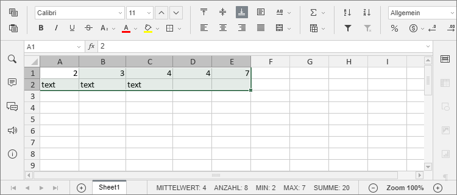
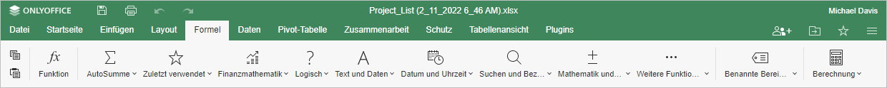

| A/B | Lfd. Nr. | Nr. aus LB | Dringlichkeit | Priorität |
|---|---|---|---|---|
| B | EG-WO-49 | WO-5.2.06 | Soll | I |
Anforderung
Ermöglichen Sie dem Nutzer im WebOffice- Tabellenkalkulationsmodul die Verwendung von statistischen Funktionen (insbesondere Regressionsfunktionen, Mittelwerte, Standardabweichung, Modalwert)?
Antwort
Die Möglichkeit grundlegende Berechnungen durchzuführen ist der eigentliche Hauptgrund für die Verwendung einer Tabellenkalkulation. Wenn Sie einen Zellbereich in Ihrer Tabelle auswählen, werden einige Berechnungen bereits automatisch ausgeführt:
- MITTELWERT analysiert den ausgewählte Zellbereich und ermittelt den Durchschnittswert.
- ANZAHL gibt die Anzahl der ausgewählten Zellen wieder, wobei leere Zellen ignoriert werden.
- MIN gibt den kleinsten Wert in einer Liste mit Argumenten zurück.
- MAX gibt den größten Wert in einer Liste mit Argumenten zurück.
- SUMME gibt die SUMME der markierten Zellen wieder, wobei leere Zellen oder Zellen mit Text ignoriert werden.
Die Ergebnisse dieser automatisch durchgeführten Berechnungen werden in der unteren rechten Ecke der Statusleiste angezeigt.

Um andere Berechnungen durchzuführen, können Sie die gewünschte Formel mit den üblichen mathematischen Operatoren manuell einfügen oder eine vordefinierte Formel verwenden.
Die Möglichkeiten zum Arbeiten mit Funktionen sind sowohl über die Registerkarten Startseite als auch Formel oder durch Drücken der Tastenkombination Umschalt+F3 verfügbar. Auf der Registerkarte Startseite können Sie die Schaltfläche Funktion einfügen verwenden. Fügen Sie eine der am häufigsten verwendeten Funktionen hinzu (SUMME, MITTELWERT, MIN, MAX, ANZAHL) oder öffnen Sie das Fenster Funktion einfügen, das alle verfügbaren Funktionen nach Kategorien sortiert enthält. Verwenden Sie das Suchfeld, um die genaue Funktion anhand ihres Namens zu finden.

Auf der Registerkarte Formel können Sie die folgenden Schaltflächen verwenden:

- Formel, um das Fenster Funktion einfügen zu öffnen, das alle verfügbaren Funktionen nach Kategorien sortiert enthält.
- AutoSumme, um schnell auf die Funktionen SUMME, MIN, MAX, ANZAHL zuzugreifen. Wenn Sie eine Funktion aus dieser Gruppe auswählen, werden automatisch Berechnungen für alle Zellen in der Spalte über der ausgewählten Zelle durchgeführt, sodass Sie keine Argumente eingeben müssen.
- Zuletzt verwendet, um schnell auf 10 zuletzt verwendete Funktionen zuzugreifen.
- Finanzmathematik, Logisch, Text und Daten, Datum und Uhrzeit, Suchen und Bezüge, Mathematik und Trigonometrie, um schnell auf Funktionen zuzugreifen, die zu den entsprechenden Kategorien gehören.
- Weitere Funktionen, um auf die Funktionen der folgenden Gruppen zuzugreifen: Datenbank, Konstruktion, Information und Statistik.
- Benannte Bereiche, um den Namensmanager zu öffnen, einen neuen Namen zu definieren oder einen Namen als Funktionsargument einzufügen.
- Berechnung, um das Programm zu zwingen, Funktionen neu zu berechnen.
Um eine Formel einzufügen:
-
Wählen Sie die Zelle, in die Sie eine Funktion einfügen möchten.
-
Gehen Sie auf eine der folgenden Arten vor:
- Wechseln Sie zur Registerkarte Formel und verwenden Sie die verfügbaren Schaltflächen in der oberen Symbolleiste, um auf eine Funktion aus einer bestimmten Gruppe zuzugreifen. Klicken Sie dann auf die erforderliche Funktion, um den Assistenten für Funktionsargumente zu öffnen. Sie können auch die Option tusätzlich aus dem Menü verwenden oder auf die Schaltfläche Formel in der oberen Symbolleiste klicken, um das Fenster Funktion einfügen zu öffnen.
- Wechseln Sie zur Registerkarte Startseite, klicken Sie auf das Symbol Funktion einfügen und wählen Sie es aus eine der häufig verwendeten Funktionen (SUMME, MITTELWERT, MIN, MAX, ANZAHL) oder klicken Sie auf die Option Zusätzlich, um das Fenster Funktion einfügen zu öffnen.
- Klicken Sie mit der rechten Maustaste in die ausgewählte Zelle und wählen Sie im Kontextmenü die Option Funktion einfügen.
-
Wählen Sie im geöffneten Fenster Funktion einfügen die gewünschte Funktionsgruppe aus und wählen Sie dann die gewünschte Funktion aus der Liste und klicken Sie auf OK.
-
Geben Sie die Funktionsargumente manuell ein oder wählen Sie den entsprechenden Zellbereich mit Hilfe der Maus aus. Sind für die Funktion mehrere Argumente erforderlich, müssen diese durch Kommas getrennt werden.
Im Allgemeinen können numerische Werte, logische Werte (WAHR, FALSCH), Textwerte (müssen zitiert werden), Zellreferenzen, Zellbereichsreferenzen, Namensbereiche und andere Funktionen als Funktionsargumente verwendet werden.
-
Geben Sie im geöffneten Fenster Funktionsargumente die erforderlichen Werte für jedes Argument ein.
Sie können die Funktionsargumente entweder manuell eingeben oder auf das Symbol klicken und eine Zelle oder einen Zellbereich auswählen, die bzw. als Argument eingeschlossen werden soll.
Allgemein können numerische Werte, logische Werte (WAHR, FALSCH), Textwerte (müssen in Anführungszeichen gesetzt werden), Zellbezüge, Zellbereichsbezüge, Namen und andere Funktionen können als Funktionsargumente verwendet werden.
Das Ergebnis der Funktion wird unten angezeigt.
-
Wenn alle Argumente angegeben sind, klicken Sie im Fenster Funktionsargumente auf die Schaltfläche OK.
Um eine Funktion manuell über die Tastatur einzugeben:
-
Wählen Sie eine Zelle aus.
-
Geben Sie das Gleichheitszeichen ein (=).
Jede Formel muss mit dem Gleichheitszeichen beginnen (=).
-
Geben Sie den Namen der Funktion ein.
Sobald Sie die Anfangsbuchstaben eingegeben haben, wird die Liste Formel automatisch vervollständigen angezeigt. Während der Eingabe werden die Elemente (Formeln und Namen) angezeigt, die den eingegebenen Zeichen entsprechen. Wenn Sie den Mauszeiger über eine Formel bewegen, wird ein Textfeld mit der Formelbeschreibung angezeigt. Sie können die gewünschte Formel aus der Liste auswählen und durch Anklicken oder Drücken der TAB-Taste einfügen.
-
Geben Sie die folgenden Funktionsargumente ein.
Argumente müssen in Klammern gesetzt werden. Die öffnende Klammer „(“ wird automatisch hinzugefügt, wenn Sie eine Funktion aus der Liste auswählen. Wenn Sie Argumente eingeben, wird Ihnen eine QuickInfo mit der Formelsyntax angezeigt.

-
Wenn Sie alle Argumente angegeben haben, schließende Sie die „)“ Klammer und drücken Sie die Eingabetaste.
Wenn Sie neue Daten eingeben oder die als Argumente verwendeten Werte ändern, wird die Neuberechnung von Funktionen standardmäßig automatisch durchgeführt. Sie können das Programm zwingen, Funktionen neu zu berechnen, indem Sie die Schaltfläche Berechnung auf der Registerkarte Formel verwenden. Klicken Sie auf die Schaltfläche Berechnung, um die gesamte Arbeitsmappe neu zu berechnen, oder klicken Sie auf den Pfeil unter der Schaltfläche und wählen Sie die erforderliche Option aus dem Menü: Arbeitsmappe berechnen oder Das aktuelle Blatt berechnen.
Sie können auch die folgenden Tastenkombinationen verwenden: F9, um die Arbeitsmappe neu zu berechnen, Umschalt+F9, um das aktuelle Arbeitsblatt neu zu berechnen.
Hier finden Sie die Liste der verfügbaren Funktionen, gruppiert nach Kategorien:
| Funktionskategorie | Beschreibung | Funktionen |
| Text- und Datenfunktionen | Diese dienen dazu die Textdaten in Ihrer Tabelle korrekt anzuzeigen. | ASC; ZEICHEN; SÄUBERN; CODE; VERKETTEN; TEXTKETTE; DM; IDENTISCH; FINDEN; FINDENB; FEST; LINKS; LINKSB; LÄNGE; LÄNGEB; KLEIN; TEIL; TEILB; ZAHLENWERT; GROSS2; ERSETZEN; ERSETZENB; WIEDERHOLEN; RECHTS; RECHTSB; SUCHEN; SUCHENB; WECHSELN; T; TEXT; TEXTVERKETTEN; GLÄTTEN; UNIZEICHEN; UNICODE; GROSS; WERT |
| Statistische Funktionen | Diese dienen der Analyse von Daten: Mittelwert ermitteln, den größen bzw. kleinsten Wert in einem Zellenbereich finden. | MITTELABW; MITTELWERT; MITTELWERTA; MITTELWERTWENN; MITTELWERTWENNS; BETAVERT; BETA.VERT; BETA.INV; BETAINV; BINOMVERT; BINOM.VERT; BINOM.VERT.BEREICH; BINOM.INV; CHIVERT; CHIINV; CHIQU.VERT; CHIQU.VERT.RE; CHIQU.INV; CHIQU.INV.RE; CHITEST; CHIQU.TEST; KONFIDENZ; KONFIDENZ.NORM; KONFIDENZ.T; KORREL; ANZAHL; ANZAHL2; ANZAHLLEEREZELLEN; ZÄHLENWENN; ZÄHLENWENNS; KOVAR; KOVARIANZ.P; KOVARIANZ.S; KRITBINOM; SUMQUADABW; EINDEUTIG; EXPON.VERT; EXPONVERT; F.VERT; FVERT; F.VERT.RE; F.INV; FINV; F.INV.RE; FISHER; FISHERINV; SCHÄTZER; PROGNOSE.ETS; PROGNOSE.ETS.KONFINT; PROGNOSE.ETS.SAISONALITÄT; PROGNOSE.ETS.STAT; PROGNOSE.LINEAR; HÄUFIGKEIT; FTEST; F.TEST; GAMMA; GAMMA.VERT; GAMMAVERT; GAMMA.INV; GAMMAINV; GAMMALN; GAMMALN.GENAU; GAUSS; GEOMITTEL; HARMITTEL; HYPGEOMVERT; HYPGEOM.VERT; ACHSENABSCHNITT; KURT; KGRÖSSTE; LOGINV; LOGNORM.VERT; LOGNORM.INV; LOGNORMVERT; MAX; MAXA; MAXWENNS; MEDIAN; MIN; MINA; MINWENNS; MODALWERT; MODUS.VIELF; MODUS.EINF; NEGBINOMVERT; NEGBINOM.VERT; NORMVERT; NORM.VERT; NORMINV; NORM.INV; STANDNORMVERT; NORM.S.VERT; STANDNORMINV; NORM.S.INV; PEARSON; QUANTIL; QUANTIL.EXKL; QUANTIL.INKL; QUANTILSRANG; QUANTILSRANG.EXKL; QUANTILSRANG.INKL; RKP; VARIATIONEN; VARIATIONEN2; PHI; POISSON; POISSON.VERT; WAHRSCHBEREICH; QUARTILE; QUARTILE.EXKL; QUARTILE.INKL; RANG; RANG.MITTELW; RANG.GLEICH; BESTIMMTHEITSMASS; SCHIEFE; SCHIEFE.P; STEIGUNG; KKLEINSTE; STANDARDISIERUNG; STABW; STABW.S; STABWA; STABWN; STABW.N; STABWNA; STFEHLERYX; TVERT; T.VERT; T.VERT.2S; T.VERT.RE; T.INV; T.INV.2S; TINV; TREND; GESTUTZTMITTEL; TTEST; T.TEST; VARIANZ; VARIANZA; VARIANZEN; VARIATION; VAR.P; VAR.S; VARIANZENA; WEIBULL; WEIBULL.VERT; GTEST; G.TEST |
| Mathematische und trigonometrische Funktionen | Werden genutzt, um grundlegende mathematische und trigonometrische Operationen durchzuführen: Addition, Multiplikation, Division, Runden usw. | ABS; ACOS; ARCCOSHYP; ARCCOT; ARCCOTHYP; AGGREGAT; ARABISCH; ARCSIN; ARCSINHYP; ARCTAN; ARCTAN2; ARCTANHYP; BASE; OBERGRENZE; OBERGRENZE.MATHEMATIK; OBERGRENZE.GENAU; KOMBINATIONEN; KOMBINATIONEN2; COS; COSHYP; COT; COTHYP; COSEC; COSECHYP; DEZIMAL; GRAD; ECMA.OBERGRENZE; GERADE; EXP; FAKULTÄT; ZWEIFAKULTÄT; UNTERGRENZE; UNTERGRENZE.GENAU; UNTERGRENZE.MATHEMATIK; GGT; GANZZAHL; ISO.OBERGRENZE; KGV; LN; LOG; LOG10; MDET; MINV; MMULT; MEINHEIT; REST; VRUNDEN; POLYNOMIAL; UNGERADE; PI; POTENZ; PRODUKT; QUOTIENT; BOGENMASS; ZUFALLSZAHL; ZUFALLSBEREICH; RÖMISCH; RUNDEN; ABRUNDEN; AUFRUNDEN; SEC; SECHYP; POTENZREIHE; VORZEICHEN; SIN; SINHYP; WURZEL; WURZELPI; TEILERGEBNIS; SUMME; SUMMEWENN; SUMMEWENNS; SUMMENPRODUKT; QUADRATESUMME; SUMMEX2MY2; SUMMEX2PY2; SUMMEXMY2; TAN; TANHYP; KÜRZEN; ZUFALLSMATRIX |
| Datums- und Uhrzeitfunktionen | Werden genutzt um Datum und Uhrzeit in einer Tabelle korrekt anzuzeigen. | DATUM; DATEDIF; DATWERT; TAG; TAGE; TAGE360; EDATUM; MONATSENDE; STUNDE; ISOKALENDERWOCHE; MINUTE; MONAT; NETTOARBEITSTAGE; NETTOARBEITSTAGE.INTL; JETZT; SEKUNDE; ZEIT; ZEITWERT; HEUTE; WOCHENTAG; KALENDERWOCHE; ARBEITSTAG; ARBEITSTAG.INTL; JAHR; BRTEILJAHRE |
| Technische Funktionen | Diese dienen der Durchführung von technischen Berechnungen: | BESSELI; BESSELJ; BESSELK; BESSELY; BININDEZ; BININHEX; BININOKT; BITUND; BITLVERSCHIEB; BITODER; BITRVERSCHIEB; BITXODER; KOMPLEXE; UMWANDELN; DEZINBIN; DEZINHEX; DEZINOKT; DELTA; GAUSSFEHLER; GAUSSF.GENAU; GAUSSFKOMPL; GAUSSFKOMPL.GENAU; GGANZZAHL; HEXINBIN; HEXINDEZ; HEXINOKT; IMABS; IMAGINÄRTEIL; IMARGUMENT; IMKONJUGIERTE; IMCOS; IMCOSHYP; IMCOT; IMCOSEC; IMCOSECHYP; IMDIV; IMEXP; IMLN; IMLOG10; IMLOG2; IMAPOTENZ; IMPRODUKT; IMREALTEIL; IMSEC; IMSECHYP; IMSIN; IMSINHYP; IMWURZEL; IMSUB; IMSUMME; IMTAN; OKTINBIN; OKTINDEZ; OKTINHEX |
| Datenbankfunktionen | Diese dienen dazu Berechnungen für die Werte in einem bestimmten Feld der Datenbank durchzuführen, die den angegebenen Kriterien entsprechen. | DBMITTELWERT; DBANZAHL; DBANZAHL2; DBAUSZUG; DBMAX; DBMIN; DBPRODUKT; DBSTDABW; DBSTDABWN; DBSUMME; DBVARIANZ; DBVARIANZEN |
| Finanzmathematische Funktionen | Diese dienen dazu finanzielle Berechnungen durchzuführen (Kapitalwert, Zahlungen usw.). | AUFGELZINS; AUFGELZINSF; AMORDEGRK; AMORLINEARK; ZINSTERMTAGVA; ZINSTERMTAGE; ZINSTERMTAGNZ; ZINSTERMNZ; ZINSTERMZAHL; ZINSTERMVZ; KUMZINSZ; KUMKAPITAL; GDA2; GDA; DISAGIO; NOTIERUNGDEZ; NOTIERUNGBRU; DURATIONТ; EFFEKTIV; ZW; ZW2; ZINSSATZ; ZINSZ; IKV; ISPMT; MDURATION; QIKV; NOMINAL; ZZR; NBW; UNREGER.KURS; UNREGER.REND; UNREGLE.KURS; UNREGLE.REND; PDURATION; RMZ; KAPZ; KURS; KURSDISAGIO; KURSFÄLLIG; BW; ZINS; AUSZAHLUNG; ZSATZINVEST; LIA; DIA; TBILLÄQUIV; TBILLKURS; TBILLRENDITE; VDB; XINTZINSFUSS; XKAPITALWERT; RENDITE; RENDITEDIS; RENDITEFÄLL |
| Nachschlage- und Verweisfunktionen | Diese dienen dazu Informationen aus der Datenliste zu finden. | ADRESSE; WAHL; SPALTE; SPALTEN; FORMELTEXT; WVERWEIS; HYPERLINLK; INDEX; INDIREKT; VERWEIS; VERGLEICH; BEREICH.VERSCHIEBEN; ZEILE; ZEILEN; MTRANS; SVERWEIS |
| Informationsfunktionen | Diese dienen dazu Ihnen Informationen über die Daten in der ausgewählten Zelle oder einem Bereich von Zellen zu geben. | FEHLER.TYP; ISTLEER; ISTFEHL; ISTFEHLER; ISTGERADE; ISTFORMEL; ISTLOG; ISTNV; ISTKTEXT; ISTZAHL; ISTUNGERADE; ISTBEZUG; ISTTEXT; N; NV; BLATT; BLÄTTER; TYP |
| Logische Funktionen | Diese dienen dazu zu prüfen, ob eine Bedingung wahr oder falsch ist. | UND; FALSCH; WENN; WENNFEHLER; WENNNV; WENNS; NICHT; ODER; ERSTERWERT; WAHR; XODER |